← 返回阅读库 · 原论文目录
论文讲解阅读文档 · 表征学习 · v153
Big Self-Supervised Models are Strong Semi-Supervised Learners[2006.10029]
视频时长 00:07:04；讲解文字 2,974 字符；提取讲解画面 19 张。按视频原顺序阅读，每段文字保留时间戳。
文字来自整段视频的自动语音转写，按自然停顿分段，并与 PPT / 论文页面 / 演示画面对齐。未将讲解压缩为摘要；术语、数字和口述公式请结合画面及原论文核对。 阅读稿已校正规范部分明确术语误识别；原始逐字稿和每处修改记录另行保留。
讲解画面为源视频截图（640×360），不是可编辑 PPT 文件。全片按每秒 2 帧扫描内容变化，逐步展开页保留；连续动画保留代表画面。清晰度受源视频限制。
下载完整资料包 · 含离线 HTML、PDF、Word、全部 PPT 画面和字幕。
原论文与材料
Big Self-Supervised Models are Strong Semi-Supervised Learners · 下载完整 PDF（18 页）
按时间阅读
00:00:00–00:00:03 · 画面 001
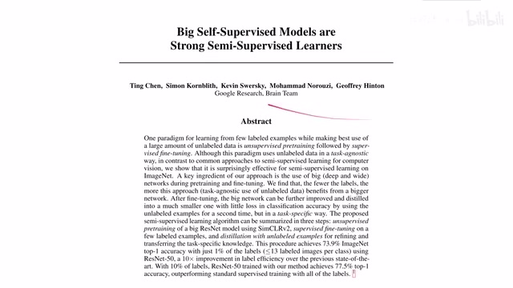
00:00:00–00:00:03 · 画面 001大家好,今天我们来介绍 Big Self-Supervised Models are Strong Semi-Supervised Learners 这篇文章就是之前的 SimCLR 的 Version 2 简单来说就是换了更大的模型取得了更好的 performance 但是如果作者直接说我只是换了更大的模型那肯定不能再数一篇论文的那怎么办呢?就在我有一个大的模型之后再重新给它加上知识蒸馏的部分
00:00:03–00:00:58 · 画面 002
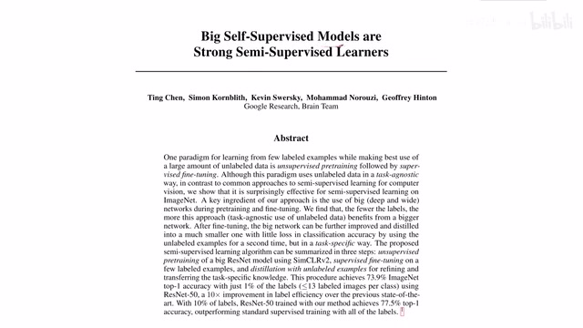
00:00:03–00:00:58 · 画面 002也就是说我在这个非监督的环境下训练好一个大的很强的模型然后呢对它进行 fine-tune 按照有监督的方法进行 fine-tunefine-tune 出来之后呢我们就得到一个强的这个分类器然后呢我们用这个强的分类器作为 teacher 标一个尺寸相对小的网络这样子呢我们就能够使用低成本把大量没有标记的数据还有这个训练好的大的网络的知识给它灌到这个小的网络里面那么这个视频呢也是非常简单我们就简单回顾一下它的方法还有作者汇报的结果以及结论那么来看到这里本文提出的系统呢就分为三个步骤首先呢就是我们非常熟悉的这个 SimCLR 它作为这个 Backbone 我们把没有标记的样本给它放到这个大的这个 CNN 里面这个 CNN 呢就是做 Pretrain 它也没有说针对具体的任务做优化
00:00:58–00:01:05 · 画面 003
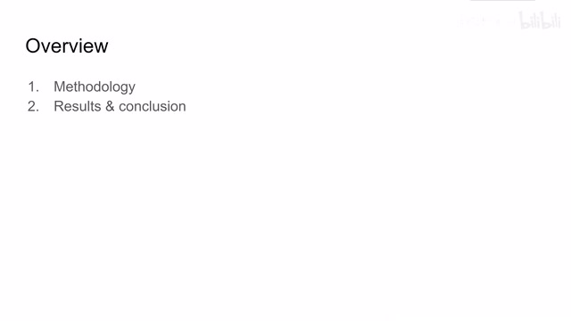
00:00:58–00:01:05 · 画面 00300:01:05–00:03:05 · 画面 004
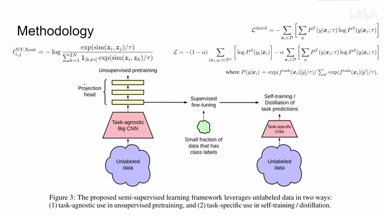
00:01:05–00:03:05 · 画面 004然后相对于原作一个是增大的 CNN 再就是作者也加了几层 Hidden Layers 在我们的 Projection MLP 里面然后使用 ContrastiveLoss 使用的还是同样的 Loss 我们做 ContrastiveLearning 就可以得到 Unsupervised 的 Pretraining 那么得到 Pretraining 之后我们就把 Label 加进来针对我们的 Image Classification 图像识别任务来做 fine-tune这个 fine-tune 呢就是标准的有监督的学习那么 fine-tune 完了之后呢我们就得到一个很强的 classifier 也就是我们的 teacher network 然后呢我们用这个 teacher network 邀一个这个尺寸可能会稍微小一点的但是它专门是用来比如说做 classification 这样的一个网络具体来说呢就是我的 teacher network 在这些 unlabeled 的 data 上给它生成 pseudo-label
那伪标签然后我们作为 Ground Truth 就扔给我们的这个 student network 那么具体知识蒸馏这一步我们使用什么样的 loss 呢看到这里这是一个典型的 cross entropy 嘛那么里面的概率呢也是和 softmax 非常接近的这么一套配置这里呢还是有个 temperature 这个 temperature 呢作为一个 hyper parameter 来控制我们的网络的输出当然呢你不仅可以利用 teacher network 中产生的 label 你也可以呢直接把 your ground truth 搬进来
然后呢让我们的 student network 去判断那么这样子呢你把这个 distillation 的知识蒸馏的这个一部分 loss 和这个 ground truth 一部分 loss 结合起来就可以构成一个大的 loss 那么这个 alpha 呢就是控制这两个项目的 tradeoff 好了那么以上就是本文的核心的思路我们聚起来看作者的实验这里呢作者就是试了不同深度的网络然后呢不同的宽度
00:03:05–00:03:11 · 画面 005
00:03:05–00:03:11 · 画面 00500:03:11–00:03:15 · 画面 006
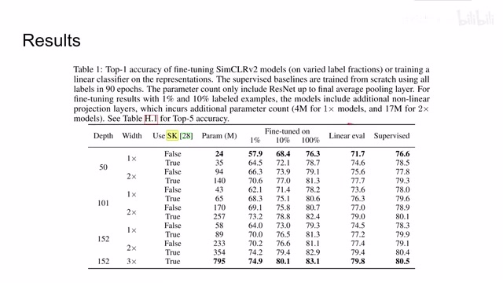
00:03:11–00:03:15 · 画面 00600:03:15–00:03:16 · 画面 007
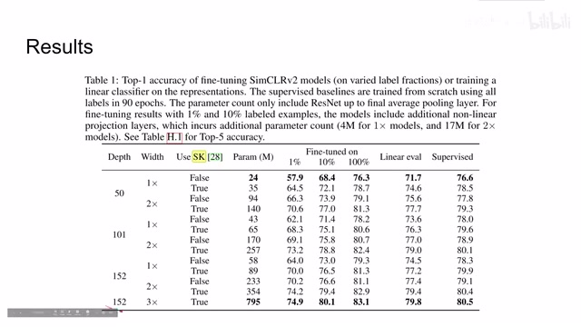
00:03:15–00:03:16 · 画面 00700:03:16–00:03:19 · 画面 008
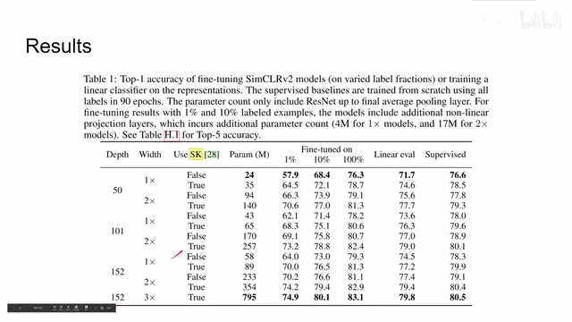
00:03:16–00:03:19 · 画面 008然后有没有这个 selective kernel 还有使用多少数量的 label 用来做 fine-tune 那么这些的结果都是看到那么毫不意外的呢我们可以知道模型越大效果越好然后呢作者为了进一步吹一下这个大的模型他发现呢说模型越大那么他的 label efficiency 也就是使用 label 的效率就越高其实就是你在这个半监督的配置下面
00:03:19–00:03:27 · 画面 009
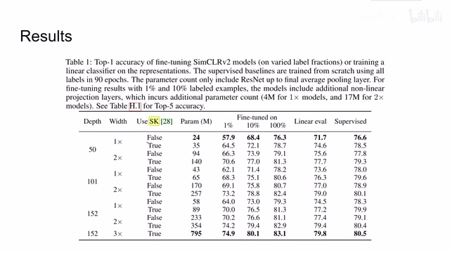
00:03:19–00:03:27 · 画面 00900:03:27–00:03:32 · 画面 010
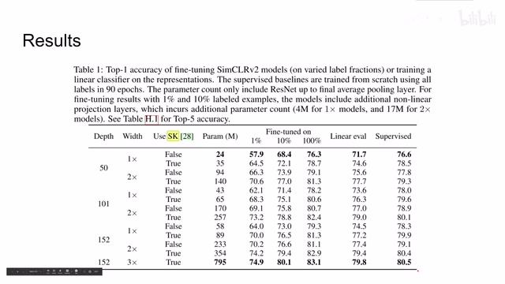
00:03:27–00:03:32 · 画面 01000:03:32–00:04:08 · 画面 011
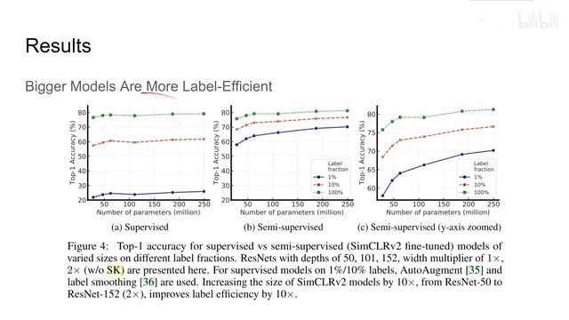
00:03:32–00:04:08 · 画面 011你发现呢随着模型尺寸的增加我使用相同的 label 呢他能获得的准确率呢是逐渐增加的而对于有监督的情况下呢他这个趋势呢就不是那么明显作者为了体现这个趋势呢在这个图里面故意的把这个 y 轴给你放大了让你看出这个趋势来在之后的一个结论呢就是使用更大的更深的 projection heads 能够改善我们的 representation learning
00:04:08–00:05:05 · 画面 012
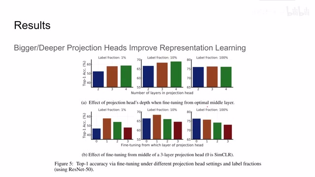
00:04:08–00:05:05 · 画面 012这点其实非常有意思就是我们在做 contrastive learning 的时候原来的 SimCLR 它是只有一层 hidden layers 那现在作者加到了两层 hidden layers 三层 hidden layers 那么来看呢发现随着这个层数的增加我们特别是在使用的 label 比较少的时候那么它的性能呢是有提升的同时呢作者还研究了说我应该从哪一层开始 fine-tune如果是直接从这个 SimCLR 它的 representation 开始 fine-tune，那效果不是那么好，而从第一层这个 hidden layer 开始 fine-tune，它的效果呢甚至比直接从 representationfine-tune 效果要好。但是呢，如果你使用的样本很多，最后呢还是发现这个从这个 SimCLR 直接 fine-tune 比较好，这个呢是一个有意思的发现。那么除去前面的 unsupervised learning 还有这个 fine-tune 的环节，我们再看这个 distillation。
00:05:05–00:06:26 · 画面 013
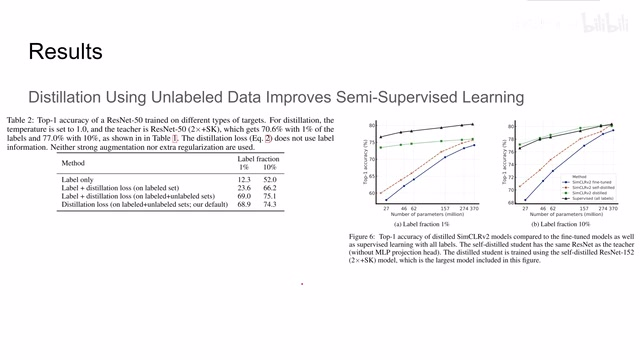
00:05:05–00:06:26 · 画面 013那么作者认为呢，distillation 特别是使用这些没有 label 的 data，可以改善我们半监督的学习的效果。那么可以看到这里使用的不同的配置啊，如果我的 student network 只使用这个 label，那它的效果呢特别是在 label 比较少的时候肯定是非常差的，而如果呢我使用 distillation，那么性能上有一定提升。
但是因为我只局限于这个有 label 的这些数据，它的这个数据量呢还是比较小的，所以提升呢并不是特别明显。那么我如果加上剩下的这些 unlabel 的 data，那就极大的扩充了我们的数据量，所以呢我们可以看到它的追求率呢有了很大的提升，而且加上我们的 ground truth 这个 label，这整个一套组合下来它的效果呢应该是最强的。
当然你如果只使用 distillation loss 只让我们的 teacher network 去教我们的 student network 而不使用任何的 label 这个过程中我们看到它的性能的下降并不是特别的明显也就是说 distillation 还是起到最主要的作用的同时和我们非先度的结论很相似这个模型越大效果越好那么最后就是惯例的作者汇报的一些同行的工作之前的工作对比一下之前的这些方法
00:06:26–00:06:33 · 画面 014
00:06:26–00:06:33 · 画面 01400:06:33–00:06:34 · 画面 015
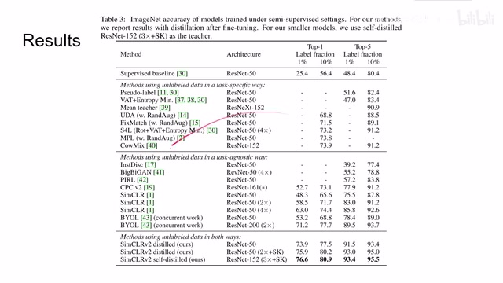
00:06:33–00:06:34 · 画面 01500:06:34–00:06:35 · 画面 016
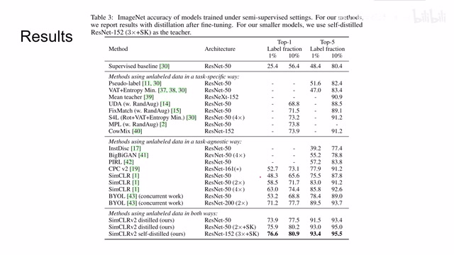
00:06:34–00:06:35 · 画面 016那本文的方法这么大的一个模型肯定是 outperform 之前的这些方法。好的，那么以上就是我对本文的简单的分析。那么这边的思路呢是非常直接，就是大量的实验堆积出来的这些数据告诉我们模型越大效果越好，还是呢，如果你对这方面感兴趣，非常推荐你去读一下本文的附录，里面有汇报了很多有意思的发现。那么感谢您的收看，再见。
00:06:35–00:06:40 · 画面 017
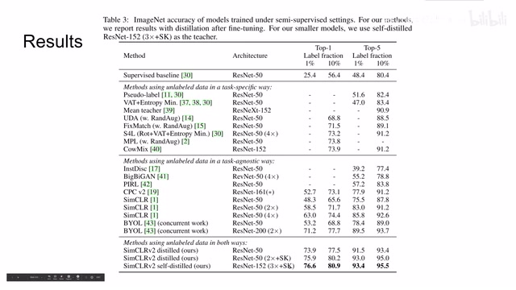
00:06:35–00:06:40 · 画面 01700:06:40–00:07:04 · 画面 018
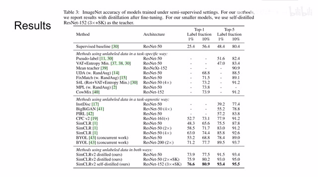
00:06:40–00:07:04 · 画面 01800:07:04–00:07:04 · 画面 019
00:07:04–00:07:04 · 画面 019转写与来源说明 · 0 个自动复核提示
保留 15 个原始语音片段，0 个片段触发自动复核提示。提示仅用于定位可能的术语、重复或识别问题，不等于已确认错误。
讲解画面为源视频截图（640×360），不是可编辑 PPT 文件。全片按每秒 2 帧扫描内容变化，逐步展开页保留；连续动画保留代表画面。清晰度受源视频限制。
原视频：paper/合集_2026-10-16_表征学习/[论文简析]Big Self-Supervised Models are Strong Semi-Supervised Learners[2006.10029].mp4
SHA-256：f92c9161977e946dea4ac6e54632637b679fddcab7ab145b396354d99a862623
全文按视频语音与画面制作。原论文可从上方链接下载；完整资料包保留全文、原始逐字稿、字幕和校对记录。